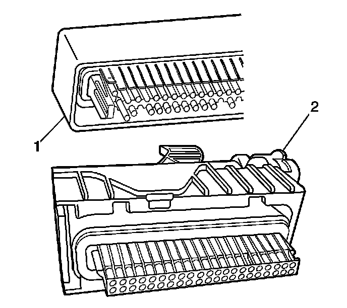
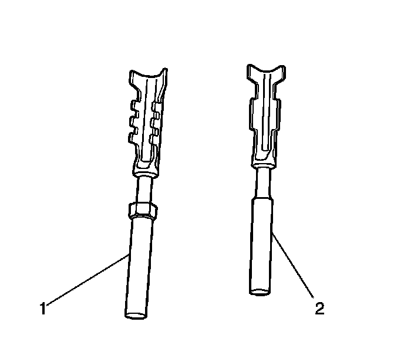
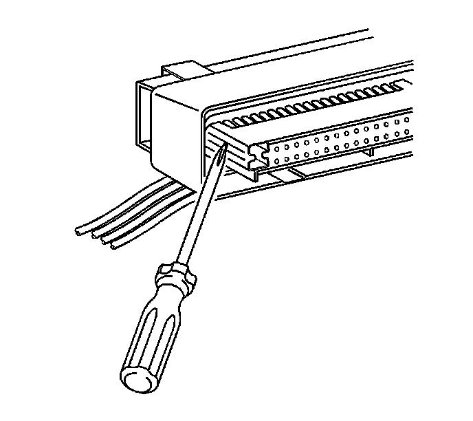
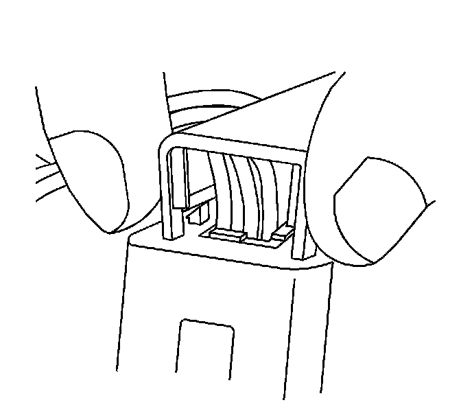
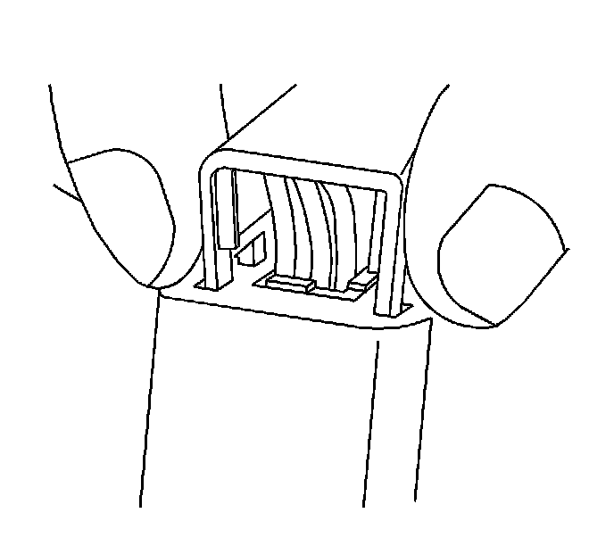
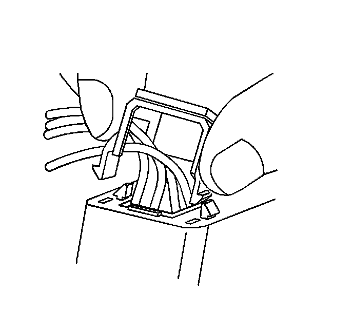
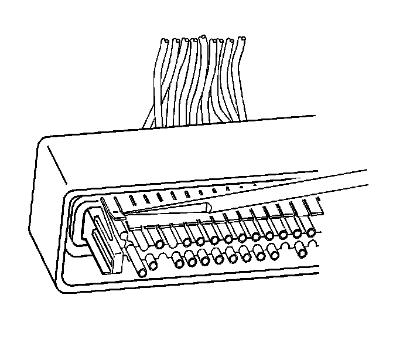
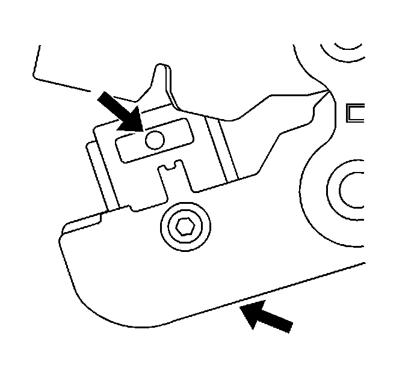
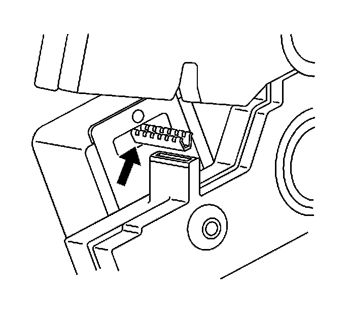

Delphi Connectors (Micro-Pack 100W)
Delphi Connectors (Micro-Pack 100W)
Tools Required
J-38125 Terminal Repair Kit
Terminal Removal Procedure
There are 2 styles of Micro-Pack 100W connectors. These connectors are very similar but use different terminals and have some minor physical differences also.

The first connector design of the Micro-Pack 100W (1) has a white connector interface that holds the terminals. The second design of the Micro-Pack 100W (2) has a gray interface to hold the terminals. Also, the first design has terminal cavities that are further apart (3 mm centerline) and offset from the other row of terminal cavities in the connector. The second design has terminals cavities that are closer together (2.54 mm centerline) and aligned vertically. One other way to identify the second design is the thin strip of material that runs along the outside of the cavities.

Important: There are 2 styles of Micro-Pack 100W terminals which are very similar. Ensure that you have the correct terminal before crimping the new terminal to the wire. The first design connector uses the longer terminal (1) that has a raised area in front of the recess in the terminal. The second design connector uses the shorter terminal without the raised area.
Follow the steps below in order to remove terminals from Micro-Pack 100W connectors. Some Micro-Pack 100W connector disassembly procedures will vary. Use this procedure as a guide.
1. Disconnect the connector from the component.

2. Locate the nose piece locking tabs that are positioned on the side of the connector nose piece. The connector nose piece acts as a terminal positive assurance (TPA) and may be referred to as such.

3. Use a small flat-blade tool to push in one of the locking tabs while gently pulling on the same side of the nose piece.
4. Repeat the procedure for the other locking tab and remove the nose piece.
5. Remove the wire dress cover. The following is a general procedure for wire dress cover removal. Use this procedure as a guide, some dress cover removal procedures may vary.

6. Use fingers to squeeze the 2 locking legs of the cover.

7. Apply pressure and gently rock the cover until one locking leg is unseated.

8. Continue to apply pressure and rock the cover until the second locking leg is unseated. Repeat procedure for the other side of the dress cover and remove the cover.

9. Use J 38125-12A (GM P/N 12094429) to gently lift the terminal retaining tab while gently pulling the wire out of the back of the connector. Always remember never use force when pulling a terminal out of a connector. See the release tool cross reference in the Reference Guide of the J-38125 to ensure that the correct release tool is used.
10. If the terminal is severely bent or damaged, it may be possible on some connectors to push the wire out of the front of the connector instead of pulling it through. This will prevent damage to the internal seals of the connector. Once the terminal is pushed out of the connector, cut the wire as close to the terminal as possible and pull the wire through the connector.
Terminal Repair Procedure
The Micro-Pack 100W connectors have small terminals that are difficult to handle and hold when crimping. In order to aid the technician when crimping these terminals, a new crimping tool was developed. The J 38125-101 (W jaw) crimping tool was developed to crimp Micro-Pack 100W terminals. The J 38125-101 (W jaw) crimping tool has a terminal holding block that will hold the terminal in place while the terminal is being crimped. After the terminal is removed from the connector perform the following procedure in order to repair Micro-Pack 100 terminals.
1. Cut the wire as close to the terminal as possible.
Important: After cutting the damaged terminal from the wire, determine if the remaining wire is long enough to reach the connector without putting a strain on the wire. If the wire is not long enough, splice a small length of the same gage wire to the existing wire, then crimp the new terminal on the added wire.
2. Strip 5 mm (3/16 in) of insulation from the wire.

3. Depress the spring loaded locator of the J 38125-101 (W jaw) crimping tool until the terminal holder is completely visible.

4. Insert the terminal into the crimp tool until the core wings are flush with the anvil on the crimp tool. Be sure that the wings are pointed toward the crimp tool former and release the spring locator. The locator will hold the terminal in place. Inspect the alignment of the terminal wings with the crimp tool former. If the terminal wings are wider than the crimp tool former, remove the terminal and bend the terminal wings in slightly.
5. Place stripped wire into terminal.
6. Crimp the new terminal to the wire. If a jam occurs, press the emergency release to open applicator.
Terminal Replacement Procedure
After the terminal is crimped to the wire perform the following procedure in order to replace Micro-Pack 100 terminals.
1. Slide the new terminal into the correct cavity at the back of the connector.
2. Push the terminal into the connector until it locks into place. The new terminal should be even with the other terminals. Ensure that the terminal is locked in place by gently pulling on the wire.
3. To assemble the connector, reverse the Terminal Removal Procedure.